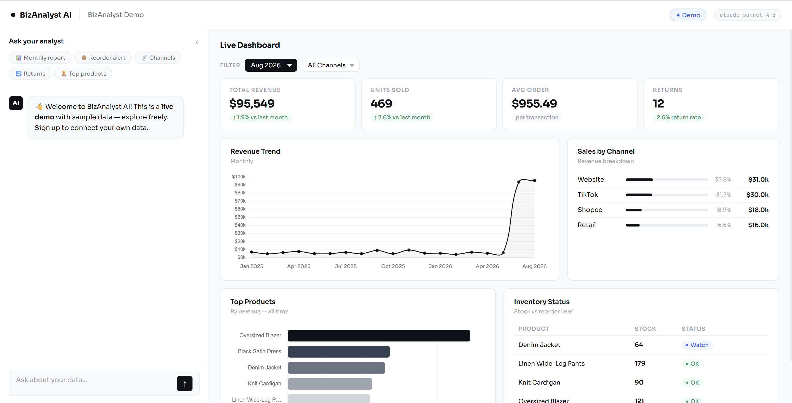
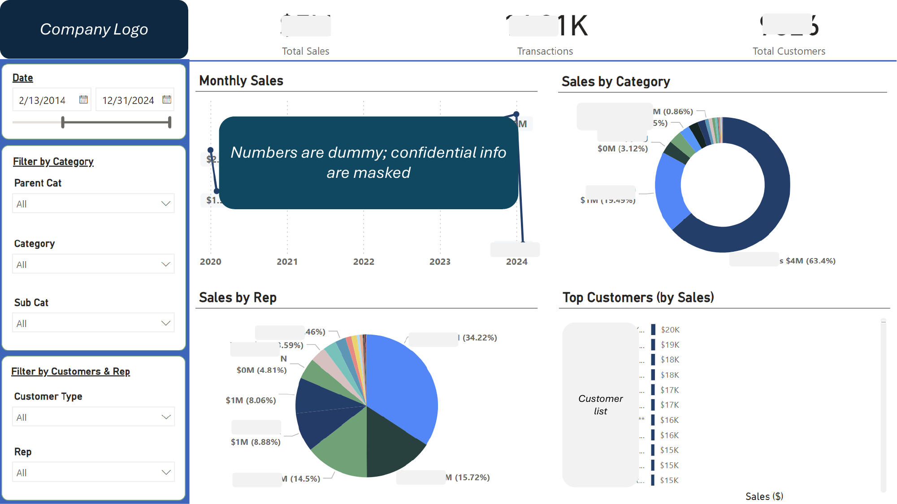

Sample Projects
* All dashboards use dummy data or have been redacted for client confidentiality.

Full-stack analytics app built with AI — multi-page dashboard with Sankey diagrams, use-gap analysis, and AI-generated insights, all filterable by center, country, and funding source.

Upload Excel data, get an automated interactive dashboard in return — built with a chatbot interface so non-technical users can explore data and generate insights without any setup.
AI agent handling end-to-end marketing workflows — content generation, campaign planning, and scheduling. Built to help small teams move faster without a dedicated marketing hire.
Sales leads dashboard tracking total leads, conversion rates, and pipeline health — with breakdowns by status and location so sales teams can prioritise follow-ups at a glance.


Google Sheets financial dashboard with P&L summary, income vs expenses trends, and key ratios like gross profit margin and operating margin — connected to live data for monthly reporting.

Multi-page operational dashboard tracking inbound/outbound flow, inventory turnover, and warehouse KPIs — built to give an ops team a daily snapshot without digging through raw data.

Sales and customer analysis dashboard tracking monthly sales, category breakdown, top customers, and rep performance — built in Power BI with interactive filters.

Sales performance dashboard for a retail client — tracks revenue by channel, region, and product category, connected live to data sources for an always up-to-date view.

Live digital analytics dashboard connecting GA data to Looker Studio — gives marketing teams a real-time view of traffic, engagement, and conversion without logging into GA.


End-to-end marketing dashboard covering site traffic, audience behaviour, and Google Ads performance — giving teams a single view to track spend, conversions, and channel effectiveness.


Multi-tab Excel dashboard tracking CTR, ROAS, impressions, and conversions across retail placements and brands — built for weekly performance reviews and campaign optimisation.